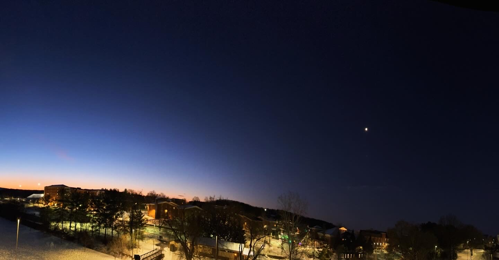
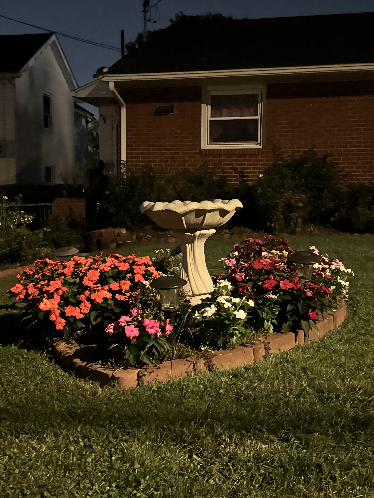
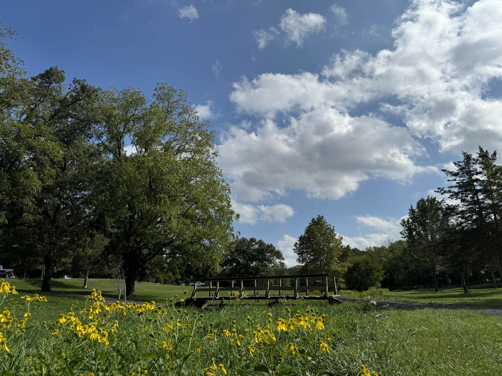
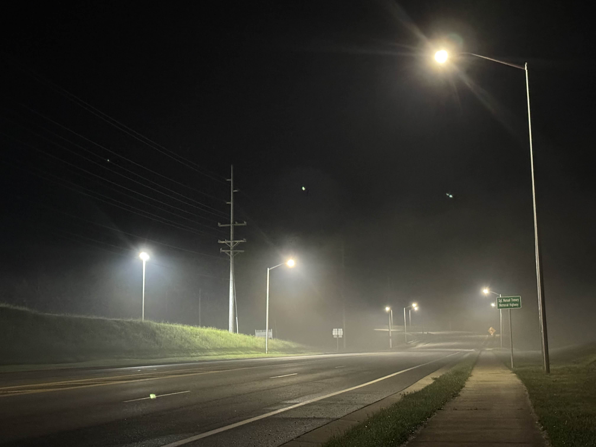
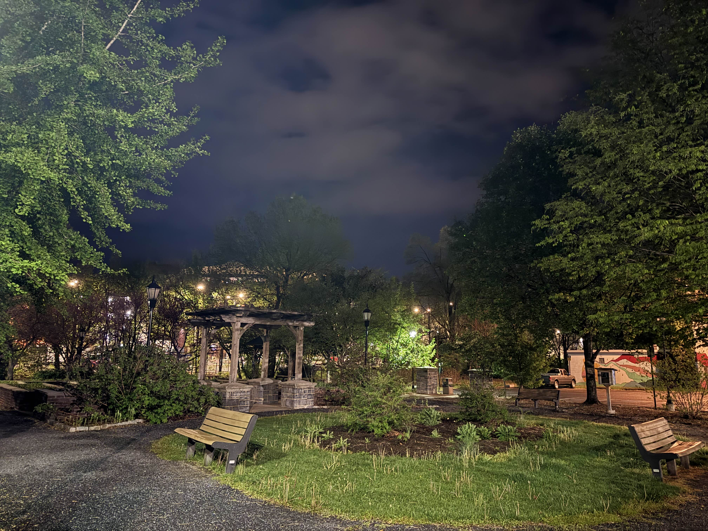

Biggest Hits
These are some of my favorite photos from my walks around Harrisonburg! They are ranked in no particular order.
-

West Campus Syzygy
Taken on a cold and snowy winter morning, this photo has the sun rising to meet the moon, in a battle for dominion over the skyline. Taken by Grafton Stovall Theatre.
-

Birdbaths and Flower hearts
Taken in a neighborhood surround JMU's Campus, this photo has a small flower arrangement shaped like a heart with a birdbath in the middle. I found it very charming.
-

Picture Perfect Spring Day
Taken in Rocktown Trails, this photo was at the height of my walking, where upon taking a path through the woods, I stumbled upon Rocktown Trails, and this quaint bridge.
-

Almost Like a Horror Movie
Taken on a road off South Main Street on a very foggy night, It has an eerie vibe that I adore.
-

Taking a Rest Downtown
Taken downtown on a brisk autumn night, I found this nice park-esque spot in the midsts of the urban surroundings of downtown Harrisonburg.